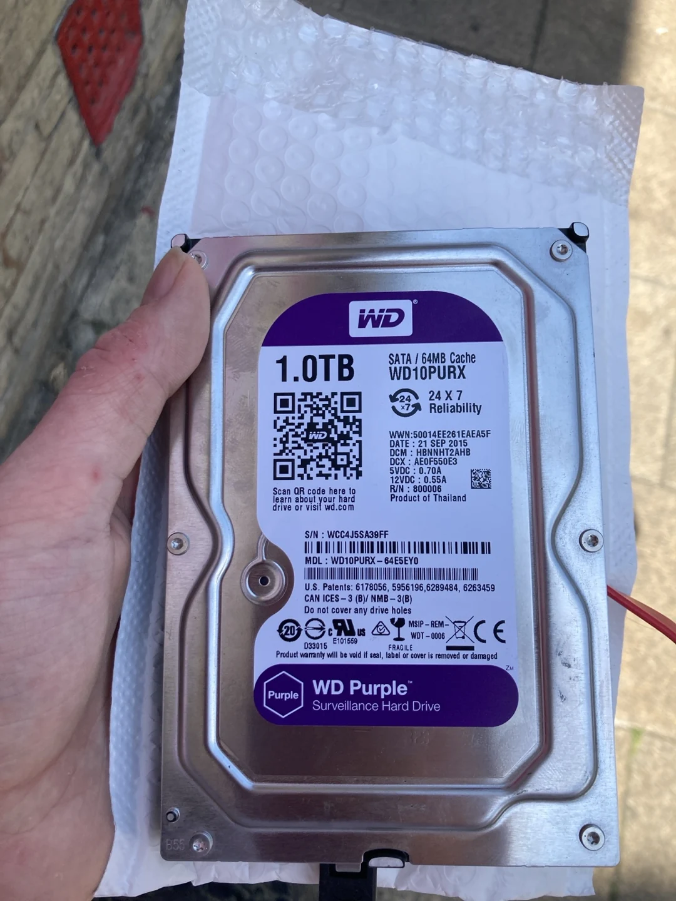
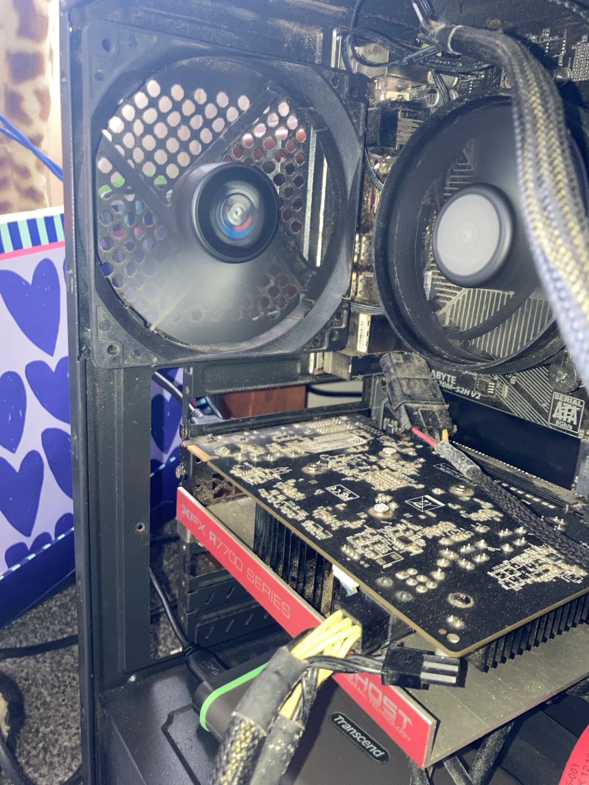
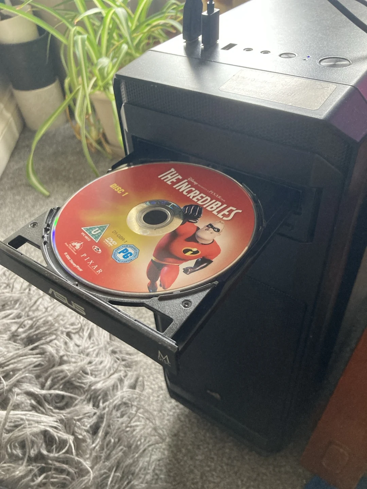

In this article
Your media, with a proper front end
Jellyfin turns folders of films, series and music into a browsable library with artwork, descriptions, playback progress and separate user accounts. The server runs on your computer; a browser or compatible app acts as the player.
That is what I wanted for the tower: one place to present files spread across several drives, without treating every viewing session as a hunt through filenames.
The quick setup
- Choose a computer that can stay on while you watch.
- Install Jellyfin Server for that operating system.
- Open its web setup page and create the local administrator account.
- Add media folders as Movies, Shows or Music libraries.
- Connect a client on the same home network and test playback.
1. Install on Mint or another supported system
The Jellyfin downloads and installation pages cover Windows, macOS, Debian/Ubuntu derivatives and other supported routes. On Mint, the official Debian/Ubuntu installer script sets up the repository and packages. Download it and its checksum, verify it, then run it; do not copy a random installation command from an advert.
mkdir -p ~/Downloads/jellyfin-setup
cd ~/Downloads/jellyfin-setup
curl -fLO https://repo.jellyfin.org/install-debuntu.sh
curl -fLO https://repo.jellyfin.org/install-debuntu.sh.sha256sum
sha256sum -c install-debuntu.sh.sha256sumRun these lines in order. Continue only if the checksum check reports OK. You can inspect the downloaded script with less install-debuntu.sh; press q to leave the viewer.
sudo bash install-debuntu.shThis runs the verified installer with administrator privileges. Follow its output. The official page also offers a manual repository setup.
systemctl status jellyfin --no-pagerCheck whether the service is active. If installation failed, resolve the reported error before continuing.
2. Create the server account
On the server itself, open http://localhost:8096. Complete the setup wizard: language, administrator username and a strong password. These accounts belong to your server; you do not need a central Jellyfin cloud account.
After setup, use Dashboard → Users to create a normal viewing account. Give family members their own account if you want separate progress and library access. Keep administration permissions for the people who actually maintain the server.
3. Give each library a sensible home
Add a Movies library for films, a Shows library for episodic television and a Music library for albums. Choose the corresponding folder and metadata language, then let Jellyfin scan it. Clean filenames help the server identify what it has found.
For a film, a layout such as Movies/Example Film (2024)/Example Film (2024).mp4 is clear. For television, use a show folder, a Season 01 folder and filenames containing episode markers such as S01E01. If a title is matched incorrectly, use Identify or edit its metadata rather than accepting the wrong poster.
The drive must be mounted, and the Jellyfin service account must be able to traverse the parent folders and read the files. Seeing a drive in your own file manager does not prove that the server can read it.

lsblk -f
findmnt /mnt/movies
sudo -u jellyfin ls "/mnt/movies"The first command lists disks and filesystems. The second checks this example mount point. The third tests access as Jellyfin itself. Replace the path with your own media location. Fix the specific permission or mount issue; do not make an entire drive world-writable.
4. Watch from another device
Run hostname -I on the server to find its local addresses. On another device connected to the same home network, enter the server’s LAN address and port, for example http://192.168.1.50:8096. That address is an example, not a universal server address.
A compatible Jellyfin client can offer a better television or mobile interface than the browser. Check the official clients list for your device and enter the same server address. The tower must stay awake: turning its display off is fine, but putting the computer to sleep stops it serving media.
5. Improve the library gradually
Start with working playback and accurate metadata, then add optional features. The plugin catalogue includes artwork providers, TMDb Box Sets for grouping related films, subtitle tools and Kodi integration. Some providers require their own account or have usage limits, so check the plugin’s description before installing it.
You can edit posters, sort names and collections in Jellyfin itself. For web-interface styling, Dashboard → Branding has a Custom CSS field. Those changes apply to clients using Jellyfin Web, not every native app. Keep a copy of your CSS before experimenting.
When playback struggles
Direct Play sends a compatible file to the client without converting the video. Transcoding has to convert it and can put a much larger load on an older CPU. Check the playback information before assuming the network is at fault. Hardware acceleration depends on the actual GPU, driver and codec; enable it using the matching Jellyfin guide rather than guessing.
This guide keeps the service inside the home network. For access away from home, use the official networking guidance to plan a VPN or a properly configured HTTPS reverse proxy. Forwarding port 8096 straight onto the public internet is not the default setup to copy.

